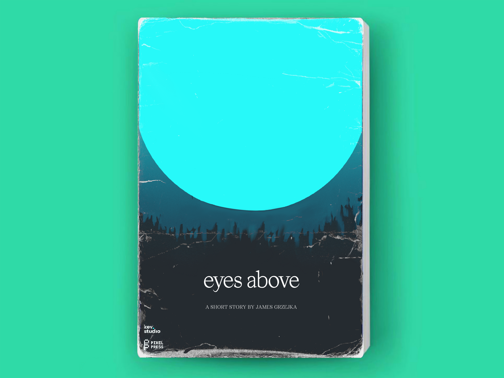
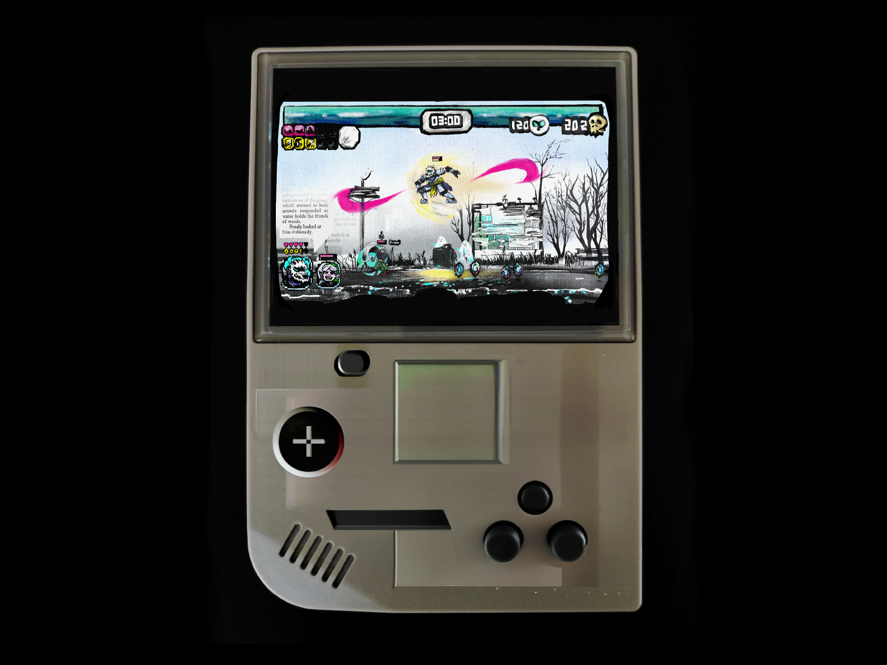
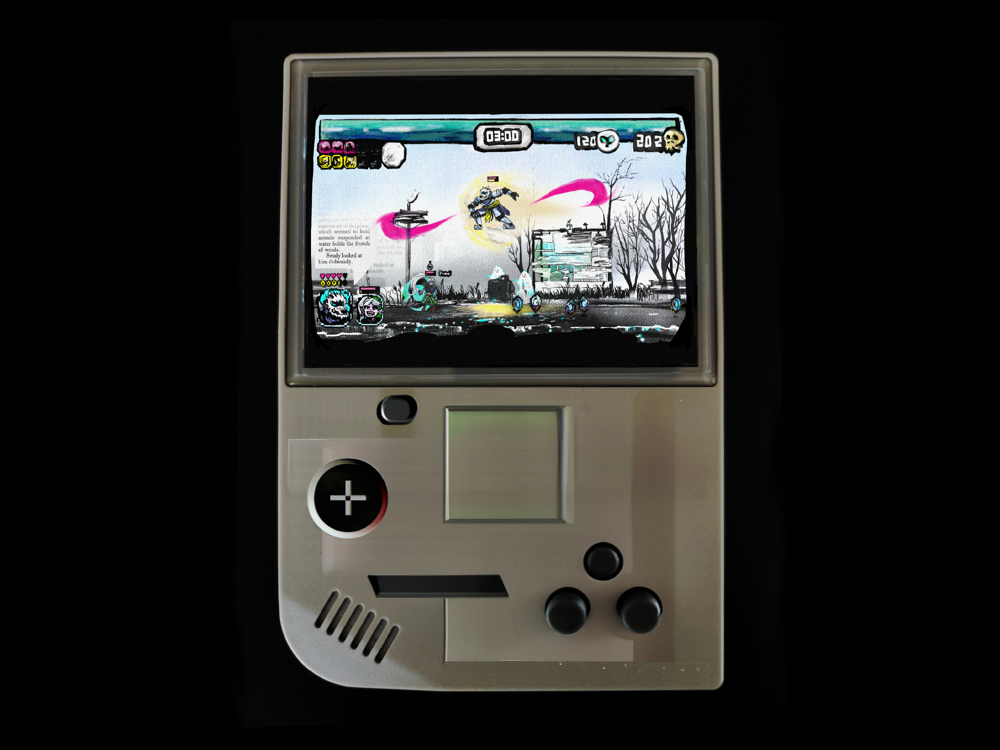
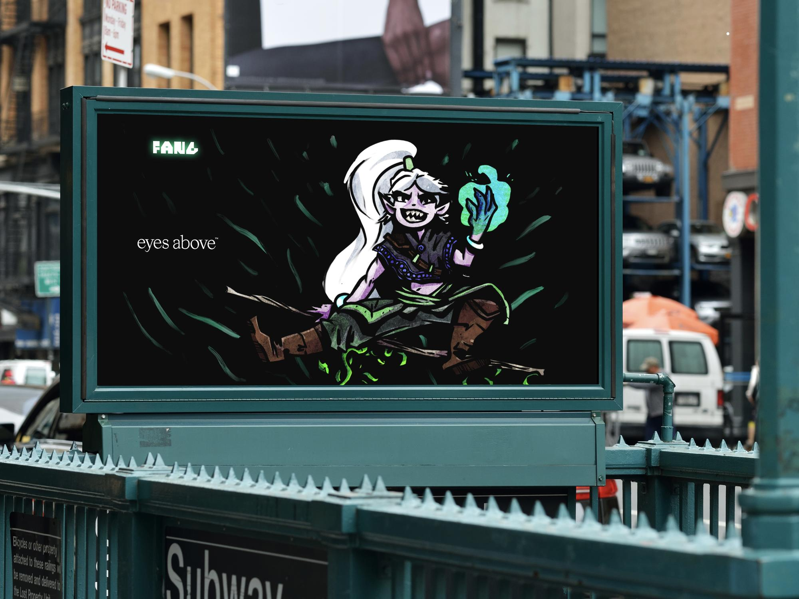
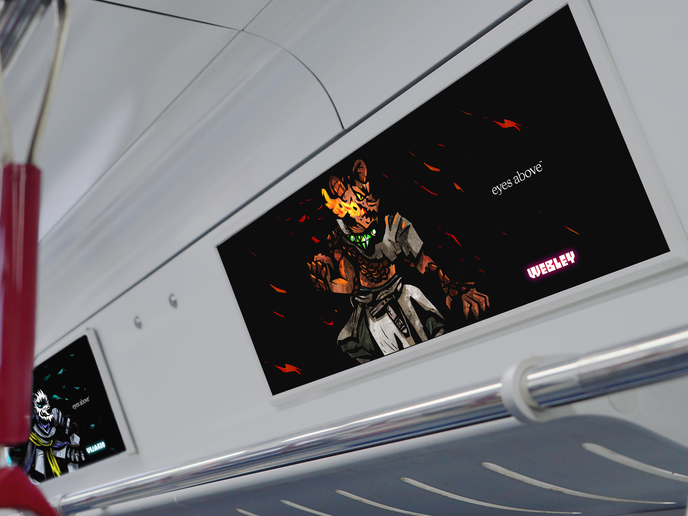
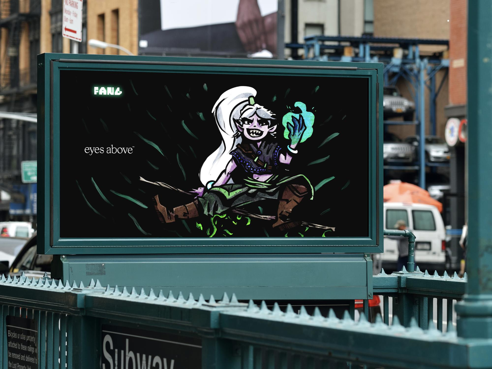
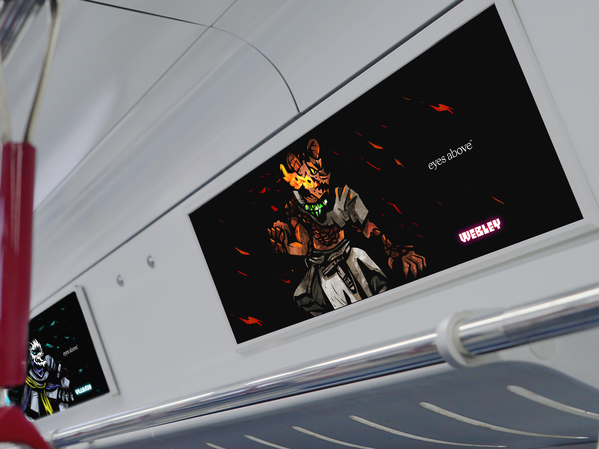

Eyes Above
Grzejka brothers unite!

Eyes Above is a personal project that began with a short story penned by my brother, James Grzejka, inspired by our years of Dungeons & Dragons campaigns. As the project's director, illustrator, designer, motion, and game designer, I transformed this narrative into a vibrant set of character animations.
Bright, saturated colors with thick outlines were employed to maintain scalability and a playful aesthetic. The long-term goal is to develop a video game demo featuring a full-color intro sequence. However, the hand-drawn animation process is time-intensive. After months of creating black-and-white sprites, I polished the existing work and submitted it to Young Guns 21. Although it was not shortlisted, the project received valuable feedback and remains a work in progress.
Special thanks to Brian Appleby, Keith Hagins, Chris Stratton, Ryan Hawk, and James Grzejka for their ongoing feedback and support. I hope to revisit and expand upon this project in the future.
Concept & story development
Collaborated with my brother, James Grzejka, to adapt his short story into a rich fantasy world. Developed character designs and world-building elements that captured the essence of our shared fantastical experiences.
Character animation
Hand-drew hundreds of frames for character movements and interactions. Utilized bright, saturated colors with thick outlines to ensure quality across various scales and maintain a cohesive, playful vibe.

Game design & prototyping
Designed game mechanics and interfaces, creating sprite sheets and other assets aimed at developing a playable demo that would showcase the full-color intro sequence.
 

Environmental design
Constructed immersive backgrounds and scenery that complemented the characters. Ensured the consistent art style maintained the fantasy aesthetic while adapting to different game environments.

Marketing & promotion
Developed promotional materials, including subway advertisements, social media assets, and presentation boards. Created mock-ups of the game in various contexts to visualize the final product.
 



Animation showcase
Compiled animation sequences for display on various platforms. Submitted the work to Young Guns 21 to showcase the project's progress and quality.

Project credits
Story: James Grzejka
Design & Animation: Kevin Grzejka
Special Thanks: Brian Appleby, Keith Hagins, Chris Stratton, Ryan Hawk